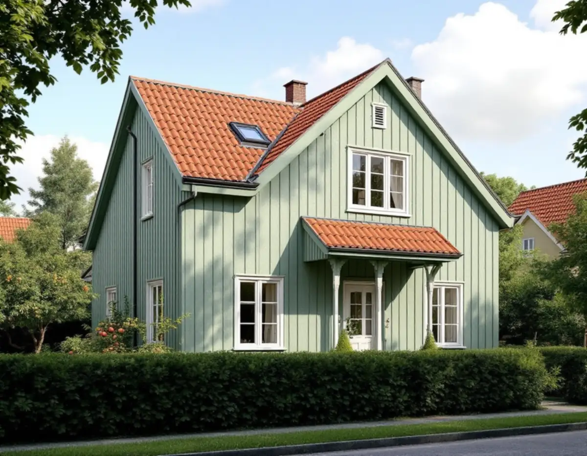
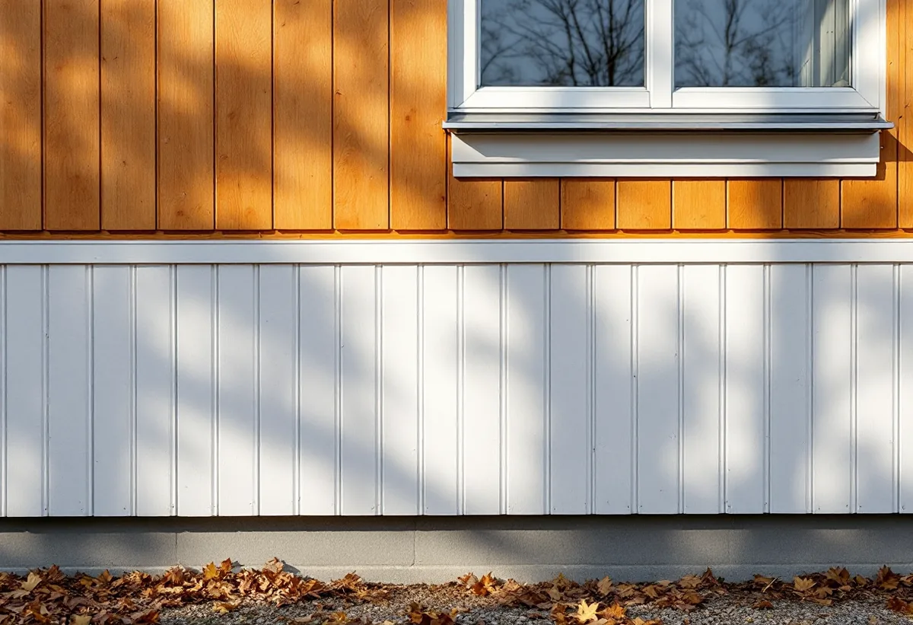

Besök på plats
Vi går runt huset, mäter panel och lockläkt, letar röta nederst och knackar på putsen där den låter ihålig.
I Brommas trädgårdsstäder och småstugeområden är det ofta detaljerna som avgör om en fasadrenovering blir lyckad: lockläktens dimension, putsens struktur och att fönstren får sitta kvar i liv med väggen. Geal Entreprenad AB renoverar fasader i hela Bromma och samordnar ställning, snickeri, puts, plåt och målning, med gratis platsbesök och skriftligt kostnadsförslag.

Stockholms stad beskriver i vägledningen Varsam utveckling av småhus- och villaområden hur trädgårdsstäderna växte fram. I bland annat Nockeby, Höglandet, Ålsten, Smedslätten och Ulvsunda blev 1920-talets klassiska formspråk rådande: enkla hus i ett och ett halvt plan, symmetriska fasader och branta sadeltak i rött tegel. Det vanligaste fasadmaterialet var stående träpanel med tunn lockläkt, men puts förekom också.
Småstugorna i Norra Ängby och Olovslund är ännu enklare. Enligt vägledningen byggdes de uteslutande i trä, med stående lockpanel och fönster placerade i fasadliv. Södra Ängby skiljer sig från båda med sina kubiska funkisvillor, där fasaderna är brutet vita eller ljust grå i slätputs eller liggande träpanel.
För en fasadrenovering ger det tre olika utgångslägen. På panelhusen handlar arbetet om brädor, läkt och anslutningar. På funkisvillorna är det putsen och underlaget som avgör. På småstugorna gäller det att väggen inte växer så mycket att fönstren hamnar i djupa nischer.

Vägledningens råd för trädgårdsstäderna är att ta tillvara eller återskapa karaktärsskapande material, kulörer, byggnadsdelar och detaljer så långt det går. På en panelfasad sitter karaktären i proportionerna: brädornas bredd, den tunna lockläkten, knutbrädor, foder och vattbrädor. Byts panelen mot en grövre profil syns skillnaden från gatan, även om kulören är densamma.
Boverket skriver att det inte är en fasadändring utan underhåll att byta fasadbeklädnaden mot samma material och utförande. Därför mäter vi upp befintlig panel och läkt innan något rivs och beställer virke som stämmer. Skadorna sitter oftast nederst mot sockeln och under fönsterbleck, och där räcker det ibland att byta de nedersta brädorna och skarva in nya.
När panelen ändå är nere går det att se över vindskyddet bakom och kontrollera att luftspalten fungerar. Takfoten hör till samma helhet. Ska tegeltaket ses över medan ställningen står finns mer om det under takrenovering i Bromma.
Boverkets energiguide beskriver utvändig tilläggsisolering som ofta bäst för både energi och fukt, eftersom den befintliga väggen blir varmare och torrare. Samtidigt varnar myndigheten för att fönster och dörrar hamnar längre in, att takfoten inte skjuter ut lika mycket och att fasaden kan hänga ut över sockeln. Resultatet kallas ett överjäst uttryck.
På en småstuga där fönstren sitter i liv med panelen blir effekten tydlig. Ska huset isoleras utvändigt behöver fönstren i regel flyttas ut och fodren göras om, och takfot och sockel kan behöva byggas på. Boverket nämner putsade funkishus där takfot, sockel och entréns skärmtak byggts på och fönster flyttats ut, så att det yttre utseendet blev oförvanskat. Det är ett relevant exempel för villorna i Södra Ängby.
Invändig isolering lämnar fasaden orörd men gör väggens utsida kallare, och risken för röta och mögel ökar ju tjockare man isolerar. Ofta är det klokare att börja uppåt, se vindsisolering.
På stadens bygglovssida räknas byte av material på fasad, nya eller ändrade fönster och tilläggsisolering upp som fasadändringar. För en- och tvåbostadshus krävs sedan 1 december 2025 normalt inget bygglov för dem, men utökad lovplikt gäller i särskilt kulturhistoriskt värdefulla byggnader och områden och där detaljplanen har skyddsbestämmelser. Stadsmuseets klassificeringskarta ger en första indikation, men staden påpekar att alla byggnader och områden ännu inte är inventerade.
Krävs lov vill staden se en fasadritning i skala 1:100 och en material- och kulörbeskrivning där kulörerna anges i NCS. Äldre ritningar på huset går att ta fram i e-tjänsten Bygg- och plantjänsten. De visar ofta panelens indelning och fönstrens placering som de var tänkta från början.
Även en lovfri renovering ska uppfylla varsamhetskraven och i många fall följa detaljplanen. Ansvaret för det ligger på dig som byggherre, skriver staden, och därför går vi igenom klassning och plan innan något beställs.
Vi går runt huset, mäter panel och lockläkt, letar röta nederst och knackar på putsen där den låter ihålig.
Stadsmuseets karta och detaljplanen kontrolleras, så att vi vet om materialbyte eller isolering kräver lov.
Lagning, byte, isolering och målning prissätts var för sig i ett skriftligt förslag.
Ställningen anpassas efter tomtens häckar och träd, och skadat material tas ner.
Virke med samma profil, eller bruk som passar underlaget, kommer upp, och fönsteranslutningar och bleck görs om.
Fasaden ytbehandlas och vi går igenom resultatet tillsammans på plats.
Skatteverket räknar det som rotarbete i ett småhus att byta och reparera fasader, tilläggsisolera och måla fasader, och även att montera och ta ner byggnadsställningar i samband med arbetet. Avdraget är 30 procent av arbetskostnaden, högst 50 000 kr per person och år och högst 75 000 kr tillsammans med rutavdrag. Material och resor ger inget avdrag.
Är ni två som äger villan har ni var sitt avdragsutrymme. Geal drar avdraget direkt på fakturan.
Hur stor del av panelen som måste bytas, om lockläkt och foder behöver tillverkas i en äldre dimension, om putsen kan lagas eller ska göras om och om väggen ska isoleras, med allt det innebär för fönster, sockel och takfot. Ställning och skydd av trädgården räknas också in. Efter ett gratis platsbesök får du ett skriftligt kostnadsförslag.
Puts, panel och tilläggsisolering.
Fasadrenovering i Stockholm →Takbyte, takbesiktning och plåtarbeten.
Takläggare i Bromma →Trädgårdsstäder, tegel och funkistak.
Takrenovering i Bromma →Fasad- och fönstermålning.
Målare i Bromma →Nya golv och slipning.
Golvläggare i Bromma →Altan, dörrar och snickerier.
Snickare i Bromma →Trädgårdsstad, karta och 30 m² inom plan.
Attefallshus i Bromma →Vind, bärande väggar och en andra bostad.
Byggföretag i Bromma →Kulörval och färgtyp i trädgårdsstaden.
Fasadmålning i Bromma →Småspröjs, småstugor och funkis i Bromma.
Fönsterbyte i Bromma →Småstugornas fönster, kitt och linoljefärg.
Fönsterrenovering i Bromma →Slipa furugolvet och behandla med lut och såpa.
Golvslipning i Bromma →Kupor, låga tak och bleck i Bromma.
Plåtslagare i Bromma →Lertegel, småstugor och solceller i Bromma.
Takbyte i Bromma →Spara och ersätta gamla tapeter.
Tapetsering i Bromma →Småstugor, trädgårdsstad och prickmark.
Tillbyggnad i Bromma →